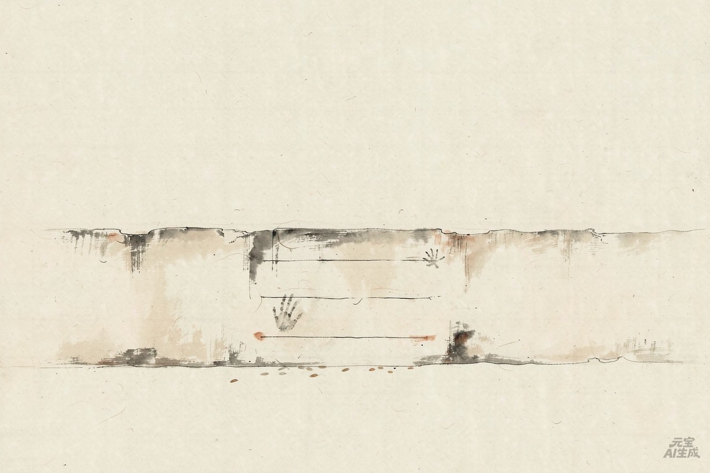

曲礼上 · 一·十七 · 第 16 课
这一节是全篇说得最狠的一段：人禽之别的标准，不是能言，是有礼。
说什么事：鹦鹉、猩猩都能言，却不离其类；人若无礼，虽能言，也只是禽兽之心。所以圣人作礼以教人，使人有礼，自己知道与禽兽分开。
落在哪一层：义，且是义之极处。前面说礼能成七事，这里说礼能定人之所以为人。
为何编在此位：一·十五说礼之大用，一·十六说持礼之态，两处都说完了，此节才敢落到最底一问：没有礼，人还是不是人。
【经】鸚鵡能言，不離飛鳥。猩猩能言，不離禽獸。今人而無禮，雖能言，不亦禽獸之心乎？夫唯禽獸無禮，故父子聚麀。是故聖人作為禮以教人，使人以有禮，知自別於禽獸。
鹦鹉 羽属。疏据《尔雅》「二足而羽谓之禽」。
猩猩 疏引《尔雅》「猩猩小而好啼」，郭璞注《山海经》「人面豕身，能言语，今交阯封溪县出猩猩，状如獾㹠，声似小儿啼」。
禽兽 名有通别。疏：「别而言之，羽则曰禽，毛则曰兽」；「通而为说，鸟不可曰兽，兽亦可曰禽」。故鹦鹉称禽，猩猩亦可通称禽。疏举《易》「王用三驱，失前禽」、《周礼·司马职》「大兽公之，小禽私之」、《白虎通》「禽者，鸟兽之总名」为证。
聚麀 郑注：「聚犹共也。鹿牝曰麀。」疏于此不复申说。
作为 作，创制；为，造作。二字连言，明礼是作出来的，不是天生即有。
以有礼 以，因而。有，持有。
自别 别，分也。自别，自己知道分开，不是被人划开。
鹦鹉能说话，仍离不开飞鸟；猩猩能说话，仍离不开禽兽。如今人没有礼，虽能说话，不也还是禽兽之心吗？正因为禽兽无礼，才有父子共一牝的事。所以圣人创制礼来教人，使人因而有礼，自己知道与禽兽分开。
能言不足以别人，有礼乃别。礼是人的界线，且这条线要人自己认得。
第一层 「能言」的陷阱 三个例子排得极冷：鹦鹉能言，猩猩也能言，二者不离其类；人若无礼，虽能言，只是「禽兽之心」。这一句把「能言」从文明的证据降为一种本领。今日重表达、重口才、重「会说话」，此节正指其非：会说话只证明你在这本领上不错，不证明你站在哪一边。
第二层 名可通，实不可混 疏用整整一段辨「禽兽」之名：羽曰禽，毛曰兽，而兽亦可通称禽，引《易》《周礼》《白虎通》三证。这一段看似训诂闲笔，实为铺垫：连名相都可以通，人却不可与禽兽通，所恃者唯礼。名称的界线可以商量，人的界线不能。
第三层 「父子聚麀」四字 全篇最重的一句，郑注只八个字：「聚犹共也。鹿牝曰麀。」不着一评。疏亦不复申说。注愈简，事愈重：无礼则无别，无别则至亲亦乱。此句不是骂人，是给「无礼」标一个下限——礼所守的第一件事，就是别。
第四层 「圣人作为」的分寸 礼不是自发长出来的，是「作为」出来的。二字承认礼出于人为；但人为不等于任意，因为下一句紧接着「以教人」——作，是为了教；教，是为了使人有；有，是为了使自知别。作、教、有、别，四步一条链，缺一环则前功尽弃。
第五层 「自别」的「自」 别不是被人划分，是自己知道。这是全节最细的一笔：礼的最后功用不在约束，在使人认得自己的位置。被人拦在门外，是管教；自己知道不该进去，才是礼。
与今日何干 今日论人机之别、文明之别，多从能力立论：会推理、会创作、会自省。能力终有被追上的一天。此节从礼立论：能力可以被代劳，礼不能。故人之所以为人，不在其能，在其所守。
| 左 | 右 |
|---|---|
| 鹦鹉能言，不离飞鸟 | 猩猩能言，不离禽兽 |
| 人而无礼，虽能言 | 不亦禽兽之心乎 |
| 唯禽兽无礼，故父子聚麀 | 圣人作为礼以教人 |
| 使人以有礼 | 知自别于禽兽 |
